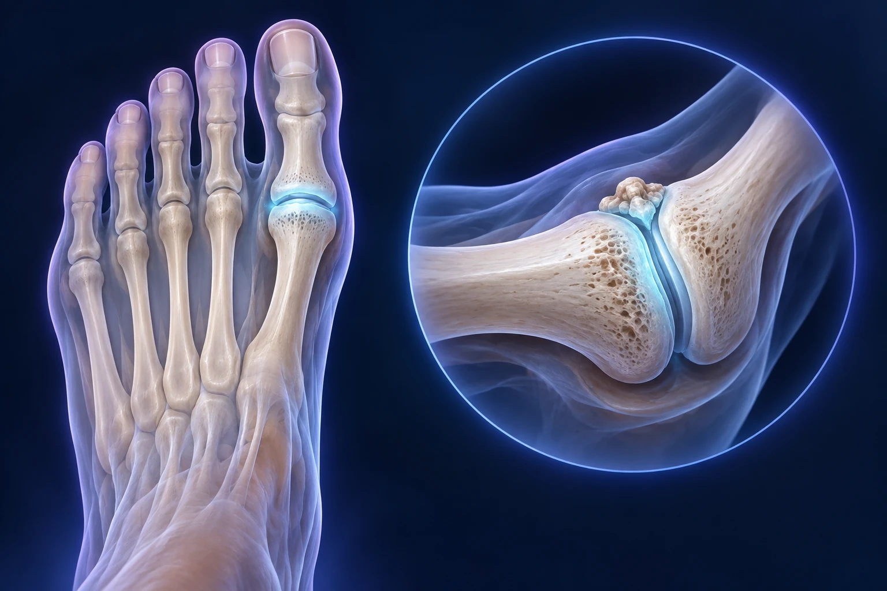

Hallux rigidus : que faire quand le gros orteil devient raide ?

L’hallux rigidus correspond à une arthrose de l’articulation située à la base du gros orteil. Il peut rendre la marche douloureuse et gêner le chaussage. Le traitement dépend de la douleur, de la mobilité restante et de l’état de l’articulation. Une opération n’est pas automatique ; lorsqu’elle est discutée, plusieurs objectifs et compromis doivent être expliqués.
Pourquoi le gros orteil intervient-il autant dans la marche ?
L’articulation métatarso-phalangienne relie le premier métatarsien à la première phalange. Elle participe au déroulement du pas. Quand le cartilage s’altère, la mobilité peut diminuer et une saillie osseuse apparaître sur le dessus de l’articulation. Cette saillie peut aussi frotter dans la chaussure. AAOS, comprendre l’hallux rigidus.
Vous pouvez ressentir une gêne au moment de quitter le sol, dans certaines pentes ou avec certaines chaussures. Pour la consultation, décrivez ces circonstances plutôt que de chercher à mesurer vous-même l’angle de mobilité. Précisez si la douleur se situe sur la bosse, à l’intérieur de l’articulation ou ailleurs sous le pied.
Est-ce la même chose qu’un hallux valgus ?
L’hallux valgus désigne principalement une déviation du gros orteil, tandis que l’hallux rigidus désigne une atteinte arthrosique avec raideur. Les deux peuvent être associés, mais ils ne répondent pas automatiquement au même traitement. Une bosse au niveau du gros orteil ne suffit donc pas à identifier la maladie. Lancashire NHS, gros orteil raide et diagnostic.
L’article sur l’hallux valgus complète cette distinction. Si vous avez déjà reçu des conseils pour un « oignon », apportez les examens réalisés : la consultation permettra de préciser quelle partie du problème explique votre gêne actuelle.
Que recherche l’examen ?
Le chirurgien évalue la mobilité, les zones douloureuses et le fonctionnement du pied. Les radiographies précisent les signes d’arthrose et les saillies osseuses. Une douleur uniquement en fin de mouvement et une douleur dans toute l’amplitude n’orientent pas nécessairement vers le même geste. AAOS, bilan de l’hallux rigidus.
Demandez à voir la zone atteinte sur vos images. Il est utile de comprendre ce qui reste mobile, ce qui provoque un conflit et ce qui relève d’une usure plus étendue. Le choix ne repose pas uniquement sur un mot comme « débutant » ou « sévère », mais sur l’ensemble de votre situation.
Quelles mesures peuvent soulager sans opération ?
Une chaussure offrant assez de place au-dessus de l’orteil peut diminuer le frottement. Selon les cas, une semelle plus rigide, une adaptation du déroulé ou une orthèse aide à limiter les mouvements douloureux. Les traitements antalgiques ou une infiltration éventuelle se discutent avec le médecin selon leurs bénéfices et leurs risques. Royal Orthopaedic Hospital, traitements de l’arthrose du gros orteil.
L’idée ressemble à celle d’un guidage adapté autour d’une charnière sensible : on cherche à rendre l’utilisation plus confortable. Cela ne répare pas le cartilage. Apportez vos chaussures habituelles ou décrivez leurs contraintes professionnelles ; une proposition qui ne peut jamais être utilisée mérite d’être réévaluée.
Quand peut-on conserver l’articulation ?
Une chéilectomie consiste à retirer des saillies osseuses responsables d’un conflit, en préservant l’articulation. Elle peut être discutée lorsque les caractéristiques de l’arthrose s’y prêtent. Elle ne recrée pas un cartilage neuf et une douleur peut persister ou réapparaître avec l’évolution de la maladie. Royal Orthopaedic Hospital, chéilectomie du gros orteil.
Demandez quel symptôme le geste cherche à corriger : frottement sur le dessus, limitation par un conflit ou douleur articulaire plus diffuse. Cette précision aide à comprendre pourquoi la même opération n’apporte pas le même bénéfice dans toutes les formes d’hallux rigidus.
Pourquoi proposer parfois une arthrodèse ?
Lorsque l’articulation est très atteinte, une arthrodèse peut être proposée. Elle consiste à faire fusionner les deux os dans une position choisie pour réduire les douleurs de l’articulation malade. La mobilité de cette articulation est supprimée, tandis que le reste du pied conserve ses mouvements. Il faut discuter des conséquences sur le chaussage et les activités. Royal National Orthopaedic Hospital, chéilectomie et fusion.
Le mot « bloquer » peut inquiéter. Demandez concrètement comment se déroulera le pas et quelles chaussures seront envisageables. L’objectif est fonctionnel : le compromis doit être expliqué par rapport à vos activités habituelles, et non présenté comme une simple correction de radiographie.
Que prévoir après l’opération ?
Les consignes d’appui, la chaussure de protection et les soins dépendent du geste. Une arthrodèse nécessite une consolidation osseuse. Les risques comprennent notamment une infection, une difficulté de cicatrisation ou de consolidation, des troubles sensitifs et une douleur persistante. Le gonflement et la reprise du chaussage demandent un suivi individualisé. Royal National Orthopaedic Hospital, récupération et risques.
Avant la décision, préparez vos déplacements et décrivez votre travail. Une activité assise ne pose pas les mêmes contraintes qu’un métier imposant chaussures de sécurité et marche prolongée. Vous pouvez consulter le Dr François Lozach à Sète pour comparer les options à partir de votre douleur et de vos objectifs.
Ces conseils sont d’ordre général et ne remplacent pas un avis médical personnalisé.